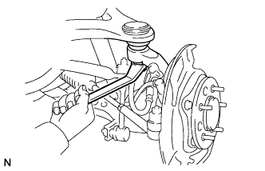

CAM LÁI > LẮP |
| 1. LẮP VÒNG BI PHÍA TRONG MOAYƠ CẦU TRƯỚC |
Dùng SST và máy ép, ép vòng bi mới vào cam lái.
Dùng kìm tháo phanh, lắp phanh hãm mới.
| 2. LẮP PHỚT DẦU MOAYƠ CẦU TRƯỚC |
Dùng SST và một búa nhựa, đóng phớt dầu mới vào.
Bôi mỡ MP lên lợi của phớt dầu.
| 3. LẮP CỤM MOAYƠ CẦU TRƯỚC TRÁI |
Lắp nắp chắn bụi vào cam lái bằng 3 bu lông.
Dùng SST và máy ép, ép moay ơ cầu xe vào cam lái.
| 4. LẮP ĐAI ỐC HÃM VÀ RÔTO CẢM BIẾN TỐC ĐỘ ABS HOẶC ĐỆM |
w/ ABS:
Lắp rôto cảm biến tốc độ ABS.
w/o ABS:
Lắp vòng đệm.
Lắp đai ốc hãm mới vào moay ơ cầu xe.
Dùng một đục và búa, cài hãm đai ốc hãm.
| 5. LẮP NẮP HÃM MỠ CAM LÁI |
Dùng SST và một búa, đóng vào nắp hãm mỡ cam lái.
| 6. LẮP CỤM MOAYƠ CẦU TRƯỚC |
| 7. LẮP CỤM ĐÒN TREO TRÊN TRƯỚC TRÁI |
|  |
Lắp đòn treo trên bằng đai ốc.
Lắp một kẹp mới.
| 8. LẮP CỤM ĐÒN TREO DƯỚI PHÍA TRƯỚC VỚI MIẾNG BẮT BÊN TRÁI |
Lắp đòn treo bằng 2 bu lông.
| 9. NỐI ĐẦU THANH NỐI |
Lắp đầu thanh nối bằng đai ốc.
Lắp chốt che mới.
| 10. LẮP ĐĨA PHANH TRƯỚC |
| 11. LẮP CỤM XI LANH PHANH ĐĨA TRƯỚC TRÁI |
Lắp xi lanh phanh bằng 2 bu lông.
Lắp ống mềm với xilanh phanh bằng bu lông nối và một gioăng mới.
| 12. LẮP CẢM BIẾN TỐC ĐỘ TRƯỚC TRÁI |
 |
Lắp cảm biến tốc độ bằng bu lông.
Lắp 3 kẹp bằng 3 bu lông.
| 13. XẢ KHÍ ĐƯỜNG ỐNG PHANH TRƯỚC |
Hãy xả khí ra khỏi đường ống phanh. (Xem trang Kích chuột vào đây).
| 14. KIỂM TRA MỨC DẦU PHANH TRONG BÌNH CHỨA |
Kiểm tra mức dầu phanh trong bình chứa. (Xem trang Kích chuột vào đây).
| 15. KIỂM TRA RÒ RỈ DẦU PHANH |
Kiểm tra rò rỉ dầu phanh (Xem trang Kích chuột vào đây).
| 16. LẮP BÁNH TRƯỚC |